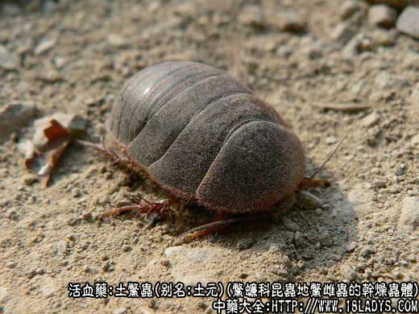
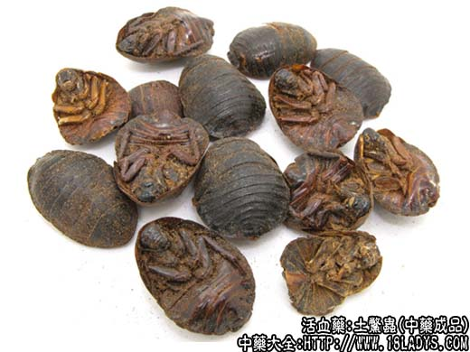
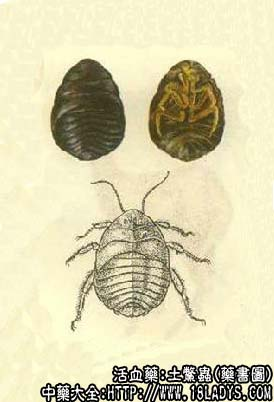

土鳖虫为较常用中药。始载《神农本草经》，列为中品。商品有苏土元、汉土元、金边土元三种。前两种行销地区较广，后一种中南、华东部分地区以及吉林习销。
别名：土元、土别虫、地鳖虫。
来源：苏土元：为鳖蠊科昆虫地鳖，雌虫的干燥虫体。
汉土元：为同科虫虫冀地鳖雌虫的干燥体。
以上两种野生或养殖，其雄虫体小扁薄有翅，不作药用。
金边土元：为姬蠊科昆虫赤边水（东方后片蠊）雌雄两性的干燥虫体。多为养殖。
功效与作用：破血逐瘀，散症结。
炮制：生用。
性味：咸、寒、有毒。
归经：入肝经。
功能：破瘀血，通经。
主治：血瘀经闭，结块腹痛，外伤瘀血作痛。
临床应用：1、用于跌打损伤有瘀肿或骨折。地鳖虫有助于消肿止痛。内服每日6～9g，酒送服，也可配自然铜、骨碎补、乳香、没药等，方如跌打散。外用可配其他活血祛瘀药水煎外洗。
2、治肝肿大属慢性肝炎或早期肝硬变，肝区有闷痛，可配郁金、三七、鸡内金等内服，有活血止痛作用。
3、治宫外孕，有包块和蓄血，可用地鳖虫加四物汤，再配薄黄、五灵脂、花蕊石等。
4、试用于抗癌，取其有软坚散结作用，常与其他抗癌药配伍，如治子宫肌瘤，可用地鳖虫配大风艾、铁包金、穿破石、虎乳灵芝等。
附：地鳖虫和水蛭不同，两者虽都能破血，但地鳖虫又兼有行血、和血的作用，药性不算峻烈，虚证也可使用。水蛭专于破血，药性峻烈，虚弱者一般不用。
用量：水煎一般用6～12g，抗癌用9～15g；入丸散服1.2～1.8g，以酒浸后炒制者效力较好。
处方举例：跌打散：地鳖虫15g（去头足，研末）、自然铜9g（煅末）、骨碎补9g、当归9g、红花9g、乳香9g、没药9g、泽兰9g、赤芍9g、川续断9g，共研极细末（亦可制丸），每服3～6g温开水或黄酒送服。
注：《本草纲目》谓：虫咸寒有毒，但临床应用上未见有明显的毒害。
另外过去有些地区曾以水生甲壳昆虫龙虱（水鳖虫）作土鳖虫用，土鳖虫在广东、广西等地区盐渍后蒸熟或炒熟后作食物用，谓能滋肾水、缩小便，有补益作用。与土鳖虫效用不同，不应混用。